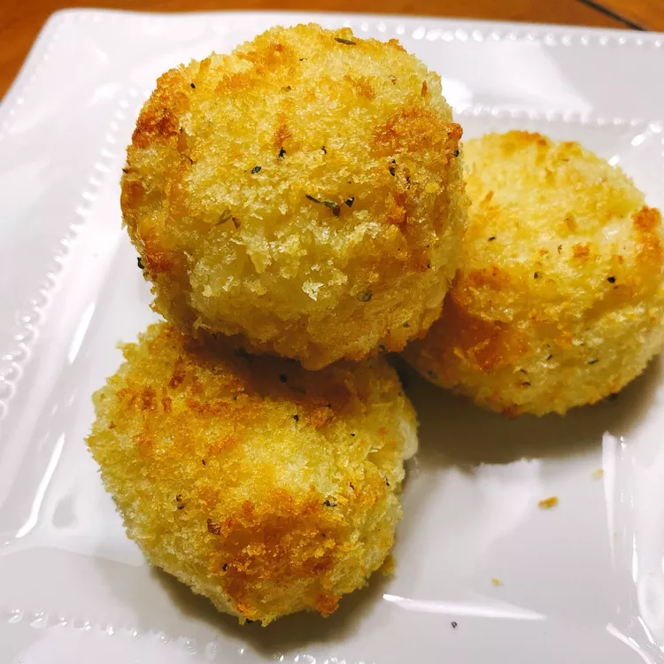

Air Fryer Arancini

Description
These air fryer arancini, or fried rice balls, are full of flavor and make a wonderful appetizer. Pair with any dipping sauce such as pesto, marinara, or meat sauce for a heartier meal. The Highlands Italian cheese sprinkle is from the Savory Spice Shop, but it is optional.
Ingredients
- 3 large eggs, divided
- 2 1/2 cup cooked rice
- 2/3 cup grated Parmesan cheese
- 1/3 cup butter, melted
- 1/2 teaspoons Highlands Italian cheese sprinkle (optional)
- 1/2 teaspoon salt
- 1/4 teaspoon ground black pepper
- 2 ounces fresh mozzarella cheese, cubed
- 1 cup panko bread crumbs
- 1/2 teaspoon Italian seasoning
- 1 pinch salt
- 1 pinch ground black pepper
- nonstick cooking spray
Directions
- Beat 2 eggs lightly in a large bowl. Stir in rice, Parmesan cheese, butter, cheese sprinkle, 1/2 teaspoon salt, and 1/4 teaspoon pepper; mix to combine. Cover and refrigerate the mixture for 20 minutes.
- Preheat an air fryer to 370 degrees F (187 degrees C) according to manufacturer's instructions.
- Roll mixture into 1 1/2-inch balls. Press a mozzarella cube into the center of each ball and reshape.
- Combine bread crumbs, Italian seasoning, salt, and pepper in a shallow dish. Beat remaining egg lightly in a second bowl. Dip each rice ball first into egg, then roll in the bread crumb mixture. Place rice balls in air fryer basket and spray with cooking spray.
- Cook in the preheated air fryer for 6 minutes. Increase temperature to 400 degrees F (200 degrees C) and air fry for 3 more minutes.
Nutrition Facts
- 385 Calories
- 21g Fat
- 39g Carbs
- 15g Protein